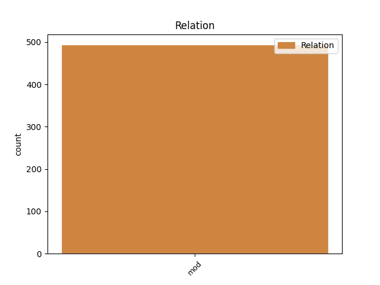
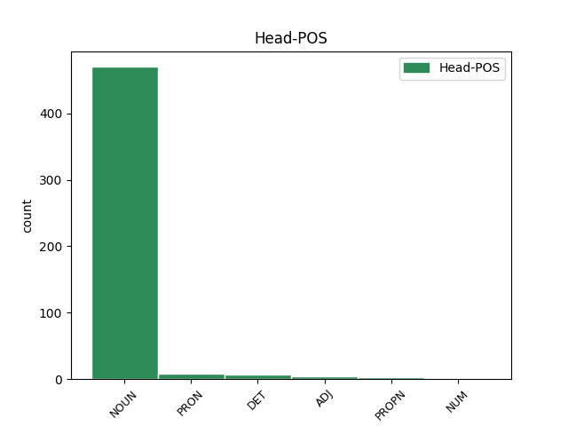
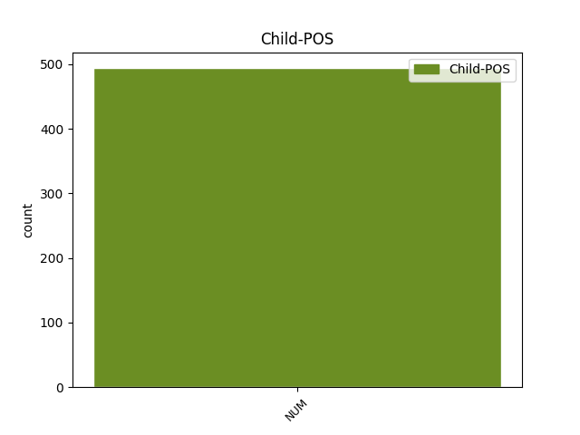

Distribution of features within this leaf



Agreement Rules sorted by frequency.
- When the dependent token is the modifer(mod) of the head token, and the dependent token is NUM.
1 Když _ _ _ _ 0 _ _ _
2 oslava _ _ _ _ 0 _ _ _
3 skončila _ _ _ _ 0 _ _ _
4 a _ _ _ _ 0 _ _ _
5 s _ _ _ _ 0 _ _ _
6 nadcházejícím _ _ _ _ 0 _ _ _
7 víkendem _ _ _ _ 0 _ _ _
8 se _ _ _ _ 0 _ _ _
9 budova _ _ _ _ 0 _ _ _
10 vyprázdnila _ _ _ _ 0 _ _ _
11 , _ _ _ _ 0 _ _ _
12 vyndal _ _ _ _ 0 _ _ _
13 otec _ _ _ _ 0 _ _ _
14 ze _ _ _ _ 0 _ _ _
15 svého _ _ _ _ 0 _ _ _
16 svazku _ _ _ _ 0 _ _ _
17 jeden jeden NUM ClIS4---------- Animacy=Inan|Case=Acc|Gender=Masc|Number=Sing|NumForm=Word|NumType=Card|NumValue=1,2,3 19 mod _ _
18 nenápadný _ _ _ _ 0 _ _ _
19 klíček klíček NOUN NNIS4-----A---- Animacy=Inan|Case=Acc|Gender=Masc|Number=Sing|Polarity=Pos 0 _ _ _
20 a _ _ _ _ 0 _ _ _
21 řekl _ _ _ _ 0 _ _ _
22 : _ _ _ _ 0 _ _ _
Disagree Examples:
1 Řekl _ _ _ _ 0 _ _ _
2 bych _ _ _ _ 0 _ _ _
3 , _ _ _ _ 0 _ _ _
4 že _ _ _ _ 0 _ _ _
5 devět devět NUM Cn-S1---------- Case=Nom|Number=Sing|NumForm=Word|NumType=Card 0 _ _ _
6 desetin desetina NUM CyFP2---------- Case=Gen|Gender=Fem|Number=Plur|NumType=Frac 5 mod _ _
7 našich _ _ _ _ 0 _ _ _
8 potíží _ _ _ _ 0 _ _ _
9 je _ _ _ _ 0 _ _ _
10 z _ _ _ _ 0 _ _ _
11 toho _ _ _ _ 0 _ _ _
12 , _ _ _ _ 0 _ _ _
13 že _ _ _ _ 0 _ _ _
14 i _ _ _ _ 0 _ _ _
15 když _ _ _ _ 0 _ _ _
16 to _ _ _ _ 0 _ _ _
17 víme _ _ _ _ 0 _ _ _
18 , _ _ _ _ 0 _ _ _
19 neděláme _ _ _ _ 0 _ _ _
20 to _ _ _ _ 0 _ _ _
21 . _ _ _ _ 0 _ _ _
1 " _ _ _ _ 0 _ _ _
2 Právě _ _ _ _ 0 _ _ _
3 jste _ _ _ _ 0 _ _ _
4 přišla _ _ _ _ 0 _ _ _
5 o _ _ _ _ 0 _ _ _
6 tržbu tržba NOUN NNFS4-----A---- Case=Acc|Gender=Fem|Number=Sing|Polarity=Pos 0 _ _ _
7 nejméně _ _ _ _ 0 _ _ _
8 dvaceti dvacet NUM Cn-P2---------- Case=Gen|Number=Plur|NumForm=Word|NumType=Card 6 mod _ _
9 tisíc _ _ _ _ 0 _ _ _
10 , _ _ _ _ 0 _ _ _
11 které _ _ _ _ 0 _ _ _
12 jsme _ _ _ _ 0 _ _ _
13 tu _ _ _ _ 0 _ _ _
14 chtěli _ _ _ _ 0 _ _ _
15 utratit _ _ _ _ 0 _ _ _
16 . _ _ _ _ 0 _ _ _
17 " _ _ _ _ 0 _ _ _
1 Bloumala _ _ _ _ 0 _ _ _
2 jsem _ _ _ _ 0 _ _ _
3 se _ _ _ _ 0 _ _ _
4 současným _ _ _ _ 0 _ _ _
5 přítelem _ _ _ _ 0 _ _ _
6 a _ _ _ _ 0 _ _ _
7 milencem _ _ _ _ 0 _ _ _
8 číslo číslo NOUN NNNS1-----A---- Case=Nom|Gender=Neut|Number=Sing|Polarity=Pos 0 _ _ _
9 tři tři NUM ClNP1---------- Case=Nom|Gender=Neut|Number=Plur|NumForm=Word|NumType=Card|NumValue=1,2,3 8 mod _ _
10 po _ _ _ _ 0 _ _ _
11 lázeňské _ _ _ _ 0 _ _ _
12 kolonádě _ _ _ _ 0 _ _ _
13 a _ _ _ _ 0 _ _ _
14 dumala _ _ _ _ 0 _ _ _
15 , _ _ _ _ 0 _ _ _
16 co _ _ _ _ 0 _ _ _
17 mám _ _ _ _ 0 _ _ _
18 snoubencům _ _ _ _ 0 _ _ _
19 koupit _ _ _ _ 0 _ _ _
20 jako _ _ _ _ 0 _ _ _
21 svatební _ _ _ _ 0 _ _ _
22 dar _ _ _ _ 0 _ _ _
23 . _ _ _ _ 0 _ _ _
1 Celé _ _ _ _ 0 _ _ _
2 měsíce _ _ _ _ 0 _ _ _
3 procházel _ _ _ _ 0 _ _ _
4 liduprázdnými _ _ _ _ 0 _ _ _
5 horskými _ _ _ _ 0 _ _ _
6 oblastmi _ _ _ _ 0 _ _ _
7 , _ _ _ _ 0 _ _ _
8 razil _ _ _ _ 0 _ _ _
9 si _ _ _ _ 0 _ _ _
10 cestu _ _ _ _ 0 _ _ _
11 sněhem _ _ _ _ 0 _ _ _
12 a _ _ _ _ 0 _ _ _
13 ledem _ _ _ _ 0 _ _ _
14 , _ _ _ _ 0 _ _ _
15 až _ _ _ _ 0 _ _ _
16 konečně _ _ _ _ 0 _ _ _
17 ve _ _ _ _ 0 _ _ _
18 výšce výška NOUN NNFS6-----A---- Case=Loc|Gender=Fem|Number=Sing|Polarity=Pos 0 _ _ _
19 pěti pět NUM Cn-P2---------- Case=Gen|Number=Plur|NumForm=Word|NumType=Card 18 mod _ _
20 tisíc _ _ _ _ 0 _ _ _
21 narazil _ _ _ _ 0 _ _ _
22 na _ _ _ _ 0 _ _ _
23 jeskyni _ _ _ _ 0 _ _ _
24 , _ _ _ _ 0 _ _ _
25 ve _ _ _ _ 0 _ _ _
26 které _ _ _ _ 0 _ _ _
27 přebýval _ _ _ _ 0 _ _ _
28 polonahý _ _ _ _ 0 _ _ _
29 poustevník _ _ _ _ 0 _ _ _
30 . _ _ _ _ 0 _ _ _